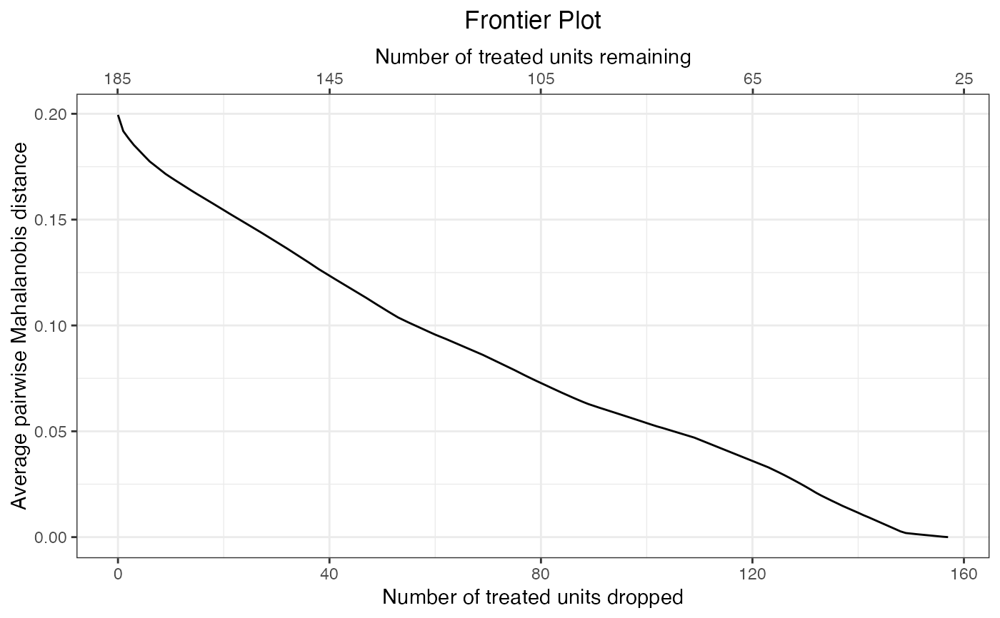

generateDataset.RdgenerateDataset() generates a dataset at a given point along the frontier identified either by the number of units remaining or the number of units dropped at that point on the frontier. This dataset can then be used in the final analysis. generateDataset() works just like MatchIt::match.data() or MatchIt::get_matches() and produces the same output as these functions when they are used on a matchit object (i.e., a data frame containing the matched units).
generateDataset(frontier.object, N, Ndrop, weights = "weights", dup = FALSE, subclass = "subclass", id = "id")
| frontier.object | a |
|---|---|
| N | the number of units remaining in the sample at the desired point on the frontier. Exactly one of |
| Ndrop | the number of units dropped in the sample at the desired point on the frontier. Exactly one of |
| weights | a string containing the name that should be given to the variable containing the matching weights in the data frame output. Default is |
| dup | when using a pair distance-based frontier, whether to have a row for each unit ( |
| subclass | when using a pair distance-based frontier and |
| id | when using a pair distance-based frontier and |
The argument to N or Ndrop depend on the quantity of interest (QOI) supplied to the original call to makeFrontier(). When QOI was "SATE" or "FSATE", they correspond to the total number of units remaining or dropped. When QOI was "SATT", they correspond to the number of control units remaining or dropped (since no treated units are dropped). When QOI was "FSATT", they correspond to the number of treated units remaining or dropped. See also the n component of the matchFrontier object at makeFrontier(). When using summary.matchFrontier(), the carrot printed underneath the summary table indicates which group N and Ndrop refer to.
A data frame containing the data supplied to the original call to makeFrontier() with the computed output variables appended as additional columns, named according the arguments above. When using a pair distance-based frontier and dup = TRUE, generateDataset() sorts the data by subclass and treatment status; otherwise, the data will be in their original order.
The returned data frame will contain the variables in the original data set and the following columns:
the computed matching weights. These must be used in effect estimation to correctly incorporate the matching.
matched pair membership. Units with the same value are in the same pair. Only included when using a pair distance-based frontier and dup = TRUE.
the ID of each unit, corresponding to the row names in the original data or dataset. Only included when using a pair distance-based frontier and dup = TRUE. This column can be used to identify which rows belong to the same unit since, e.g., the same control unit may appear multiple times, being matched to multiple treated units.
frontier_to_matchit() for generating a matchit object at a point on the frontier, MatchIt::match.data() or MatchIt::get_matches()
data("lalonde", package = "MatchIt") #Pair distance frontier for FSATT f1 <- makeFrontier(treat ~ age + educ + married + re74, data = lalonde, QOI = "FSATT", metric = "Mahal") plot(f1)#> [1] "treat" "age" "educ" "race" "married" "nodegree" #> [7] "re74" "re75" "re78" "weights"#> [1] "id" "subclass" "weights" "treat" "age" "educ" #> [7] "race" "married" "nodegree" "re74" "re75" "re78"#The same can be accomplished by fist converting to #a matchit object and then using match.data() or #get_matches() m1 <- frontier_to_matchit(f1, Ndrop = 120) stopifnot(all.equal(md1, MatchIt::match.data(m1))) stopifnot(all.equal(md2, MatchIt::get_matches(m1)))